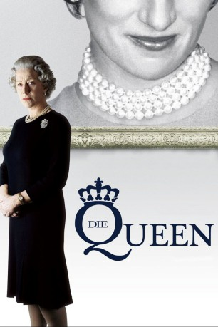
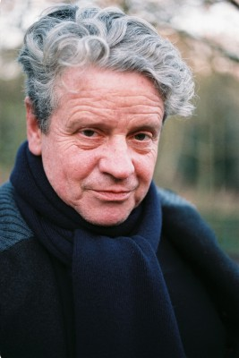

#2809 Die Queen
Alternativ: The Queen
Auszeichnungen: 1 Oscars gewonnen für 5 Oscars nominiert 2 GoldenGlobes gewonnen 2 BAFTA-Awards gewonnen
 
 IMDB-Wertung: 7.3 / 10
IMDB-Wertung: 7.3 / 10  Metascore: 91
Metascore: 91 
Biographie-Drama. Regisseur Stephen Frears portraitiert mit seinem Film die Ereignisse in der Royal Family nach dem tragischen Tod von Lady Diana. Frears beleuchtet jedoch weniger den Blickwinkel der öffentlichen Angelegenheit als vielmehr die persönlichen und politischen Auswirkungen, die der spektakuläre Todesfall auf die königliche Familie hatte.
Jahr: 2006
Dauer: 104 Minuten
FSK: 0
Land: England Studio: Concorde FilmverleihTonspuren: DTS - ,
Untertitel:
Auflösung: 1080p (1920x1080) Größe: 10342 MB
Genre: Drama, Biographie
Regisseur:  Stephen Frears
Stephen Frears
Drehbuch: Peter Morgan
Soundtrack: Alexandre Desplat
Darsteller:
 Helen Mirren als The Queen
Helen Mirren als The Queen James Cromwell als Prince Philip
James Cromwell als Prince Philip Alex Jennings als Prince Charles
Alex Jennings als Prince Charles Roger Allam als Robin Janvrin
Roger Allam als Robin Janvrin Sylvia Syms als Queen Mother
Sylvia Syms als Queen Mother Douglas Reith als Lord Airlie
Douglas Reith als Lord Airlie- Pat Laffan als Head Ghillie
- John McGlynn als Balmoral Head Ghillie
 Michael Sheen als Tony Blair
Michael Sheen als Tony Blair Helen McCrory als Cherie Blair
Helen McCrory als Cherie Blair- Mark Bazeley als Alastair Campbell
-  Julian Firth als Blair's Aide
 Earl Cameron als Portrait Artist
Earl Cameron als Portrait Artist Elliot Levey als TV Director
Elliot Levey als TV Director- Anthony Debaeck als Catholic Priest
 Wolfgang Pissors als German Reporter
Wolfgang Pissors als German Reporter- Malou Beauvoir als American Reporter
 Paul Barrett als French Bodyguard
Paul Barrett als French Bodyguard Bill Clinton als Himself , archive footage, uncredited
Bill Clinton als Himself , archive footage, uncredited Tom Cruise als Himself , archive footage, uncredited
Tom Cruise als Himself , archive footage, uncredited Tom Hanks als Himself , archive footage, uncredited
Tom Hanks als Himself , archive footage, uncredited Elton John als Himself , archive footage, uncredited
Elton John als Himself , archive footage, uncredited Forbes KB als Biker , uncredited
Forbes KB als Biker , uncredited Nicole Kidman als Herself , archive footage, uncredited
Nicole Kidman als Herself , archive footage, uncredited- Nelson Mandela als Himself , archive footage, uncredited
- Trevor McDonald als Himself - Newsreader , archive footage, uncredited
- Gavin Park als Royal Protection Officer , uncredited
- Camilla Parker-Bowles als Herself , archive footage, uncredited
- Luciano Pavarotti als Himself , archive footage, uncredited
- Princess Diana als Herself , archive footage, uncredited
 Stephen Samson als Greenkeeper , uncredited
Stephen Samson als Greenkeeper , uncredited Steven Spielberg als Himself , archive footage, uncredited
Steven Spielberg als Himself , archive footage, uncredited Tracey Ullman als Herself , archive footage, uncredited
Tracey Ullman als Herself , archive footage, uncredited- Tim McMullan als Stephen Lamport
 Robin Soans als Equerry
Robin Soans als Equerry- Lola Peploe als Janvrin's Secretary
- Joyce Henderson als Balmoral Maid
- Amanda Hadingue als Queen's Dresser
- Gray O'Brien als Charles' Valet
- Dolina MacLennan als Balmoral Switchboard Operator
- Jake Taylor Shantos als Prince William
- Dash Barber als Prince Harry
- Kananu Kirimi als Blair's PA
- Susan Hitch als Blair's Secretary
- Harry Alexander Coath als Euan Blair
- Emmy Lou Harries als Little Girl
- Laurence Burg als Princess Diana
- Michel Gay als Dodi Fayed
- Xavier Castano als French Bodyguard
- Mohamed Al-Fayed als Himself , archive footage, uncredited
Datei: X:\2006(N-Z)\Queen, Die (2006, FSK0, 1920x1080).mkv seit 18.12.2015
Festplatte: HD 2005(G-Z)-2006(A-Z)
 Es gibt insgesamt 62 Filme in der Gruppe '2006(N-Z)'
Es gibt insgesamt 62 Filme in der Gruppe '2006(N-Z)'